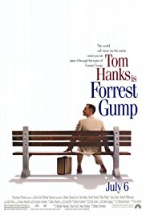

1. Shawshank Redemption
Ratings-9.2

2.The Godfather
Ratings-9.0

3.The Godfather Part-2
Ratings-9.0
4.The Batman Trilogy
Ratings-9.0

5. 12 Angry Men (1957)
Ratings-8.9

6.Schindler's List (1993)
Ratings-8.9

7.Pulp Fiction
Ratings-8.9

8. The Lord of the Rings: The Return of the King (2003)
Ratings-8.9

9.Fight Club
Ratings-8.9

10.Forrest GUmp
Ratings-8.8
